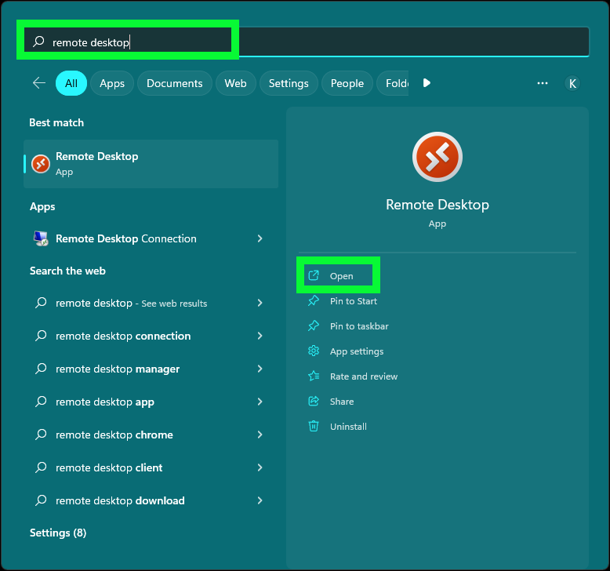

Prerequisites
The ELM environment utilized in this demonstration guide was recently ported from Skytap in IBM Technology Zone (ITZ) to a VMware image running in ITZ. When accessing the running VM using the web-based remote desktop, the screen resolution appears very small (at least on when run on browsers on MacOS). While you can complete the demonstration guide using the web-based remote desktop the small resolution may make it difficult and/or frustrating.
There are 3 recommended paths to access the VMware image. Choose one and follow the steps below to connect to the VMware image.
- Use the Browser-based remote desktop and modify the screen resolution once connected
- Use Microsoft Remote Desktop application on MacOS
- Use Microsoft Remote Desktop application on Microsoft Windows
Follow one of the sections below to make the initial connection to the VMware image.
Browser-based remote desktop client
- Using the ITZ reservation details page under My Reservations on ITZ, click the VM Remote Console button at the bottom of the IBM Cloud ELM DET R3 details page.
- Enter il0vedem0s at the Administrator's password prompt and press enter.
- Right click on the desktop and select Display settings.

- On the Display settings page specify a resolution that works best for the user.
Try 1600 x1200. This may take a few tries to find one that works best for each users monitor.
- Click the Keep changes button.
Once satisfied with the display settings, proceed to the Demonstration Environment Preparation chapter.
Remote Desktop for MacOS
Microsoft Remote Desktop is available for free on the Apple App Store. To install the application, open the Apple App Store application and search on "Microsoft Remote Desktop".

Click the Get button and then click the Open button after the install completes.
- Using either the IBM Technology Zone (ITZ) email with the subject Your environment is ready or the ITZ reservation details page, find and copy the Remote Desktop Connection field which will be in the format host:port.
E-mail example of Your environment is ready
ITZ reservation details page

-
Open the Microsoft Remote Desktop application on your local machine.
-
Click the + button at top left and then click Add PC.
- Paste the host:port information from step 1 into the PC name: field.
-
Click the Add button.
-
Double click the PC name item in the table.
- Enter Administrator in the Username field and il0vedem0s in the Password field.
Note: the password contains two zero's and no capital Os.

-
Click the Continue button.
-
Click Continue if prompted about a certificate that could not be verified.
Proceed to the Demonstration Environment Preparation chapter.
Remote Desktop for Microsoft Windows
The Microsoft Remote Desktop application should already be available on the Windows operating system, but if it is not, it can be installed from the Microsoft Store. A good tutorial on using the Remote Desktop application can be found here.
If not already installed, open the Microsoft App Store and search on "Microsoft Remote Desktop".

Click the Get button.
- Using either the IBM Technology Zone (ITZ) email with the subject Your environment is ready or the ITZ reservation details page, find and copy the Remote Desktop Connection field which will be in the format host:port.
E-mail example of Your environment is ready
ITZ reservation details page
- Open the Microsoft Remote Desktop application on your local machine.

- Click the + Add button at top right and then click PCs.
- Paste the host:port information from step 1 into the PC name: field and then press the + icon above the User account field.
- Enter Administrator in the Username field and il0vedem0s in the Password field and click Save.
- Click Save on the Add a PC screen.

- Click the PC icon for the connection just created.
- Double click the PC name item in the table.
- If not already filled in, enter Administrator in the Username field and il0vedem0s in the Password field.
Note: the password contains two zero's and no capital Os.
-
Click the Connect button.
-
Check the Don't ask about this certificate again checkbox and then click Connect anyway on the Accept certificate and connect dialog.

Proceed to the Demonstration Environment Preparation chapter.